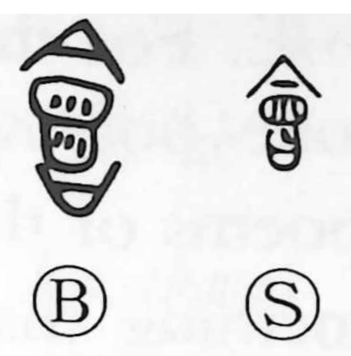

会

Uncategorized
Kun: au | On: kai, e
to meet ・ to gather ・ meeting ・ assembly
Explanation
Originally written 會, this character depicts a lidded cooking pot on its stand: the lid above, the pot in the middle, and the support below, shown as 日. It conjures a vessel in which ingredients are brought together to simmer into one, and from that image arose the sense of bringing things or people together—gathering, meeting. The related graph 合 portrays a vessel and its lid fitting as one; hence in compounds like 会合 it expresses the fitting together of people in an assembly, not anything to do with a meal.